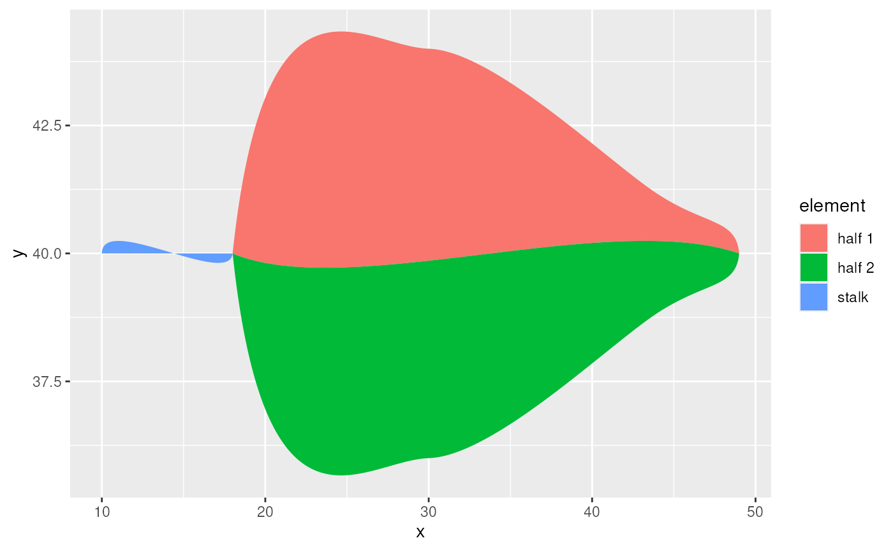

Transform bezier dataframe to dataframe with path coordinates
Source:R/bezier_coords.R
bezier_to_polygon.RdTransform bezier dataframe to dataframe with path coordinates
Arguments
- df_benjamini_leaf
Dataframe returned by
benjamini_leaf()- ...
grouping variables in
df_benjamini_leafthat will be kept in the transformation.
Examples
df_coords <- benjamini_leaf() %>%
tidyr::unite(b, i_part, element, remove = FALSE) %>%
bezier_to_polygon(b, i_part, element)
df_coords
#> # A tibble: 900 × 5
#> b i_part element x y
#> <chr> <dbl> <chr> <dbl> <dbl>
#> 1 0_stalk 0 stalk 10 40
#> 2 0_stalk 0 stalk 10.0 40.0
#> 3 0_stalk 0 stalk 10.0 40.0
#> 4 0_stalk 0 stalk 10.0 40.1
#> 5 0_stalk 0 stalk 10.0 40.1
#> 6 0_stalk 0 stalk 10.1 40.1
#> 7 0_stalk 0 stalk 10.1 40.1
#> 8 0_stalk 0 stalk 10.1 40.1
#> 9 0_stalk 0 stalk 10.2 40.2
#> 10 0_stalk 0 stalk 10.2 40.2
#> # ℹ 890 more rows
df_coords %>%
ggplot2::ggplot(ggplot2::aes(x = x, y = y, group = element, fill = element)) +
ggplot2::geom_polygon()
